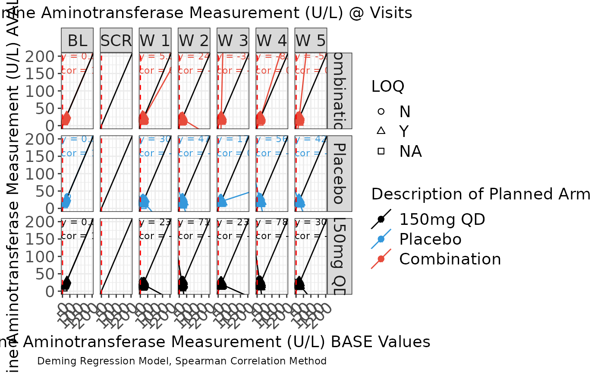

g_scatterplot.RdDefault plot displays scatter facetted by visit with color attributed treatment arms and symbol attributed LOQ values.
g_scatterplot(
label = "Scatter Plot",
data,
param_var = "PARAMCD",
param = "CRP",
xaxis_var = "BASE",
yaxis_var = "AVAL",
trt_group = "ARM",
visit = "AVISITCD",
loq_flag_var = "LOQFL",
unit = "AVALU",
xmin = NA,
xmax = NA,
ymin = NA,
ymax = NA,
color_manual = NULL,
shape_manual = NULL,
facet_ncol = 2,
facet = FALSE,
facet_var = "ARM",
reg_line = FALSE,
hline = NULL,
vline = NULL,
rotate_xlab = FALSE,
font_size = 12,
dot_size = NULL,
reg_text_size = 3
)text string to used to identify plot.
ADaM structured analysis laboratory data frame e.g. ADLB.
name of variable containing biomarker codes e.g. PARAMCD.
biomarker to visualize e.g. IGG.
name of variable containing biomarker results displayed on X-axis e.g. BASE.
name of variable containing biomarker results displayed on Y-axise.g. AVAL.
name of variable representing treatment group e.g. ARM.
name of variable containing nominal visits e.g. AVISITCD.
name of variable containing LOQ flag e.g. LOQFL.
name of variable containing biomarker unit e.g. AVALU.
x-axis lower zoom limit.
x-axis upper zoom limit.
y-axis lower zoom limit.
y-axis upper zoom limit.
vector of colors applied to treatment values.
vector of symbols applied to LOQ values.
number of facets per row.
set layout to use treatment facetting.
variable to use for treatment facetting.
include regression line and annotations for slope and coefficient in visualization. Use with facet = TRUE.
y-axis value to position a horizontal line.
x-axis value to position a vertical line.
45 degree rotation of x-axis label values.
font size control for title, x-axis label, y-axis label and legend.
plot dot size.
font size control for regression line annotations.
Regression uses deming model.
# Example using ADaM structure analysis dataset.
library(scda)
library(stringr)
# original ARM value = dose value
arm_mapping <- list("A: Drug X" = "150mg QD", "B: Placebo" = "Placebo", "C: Combination" = "Combination")
color_manual <- c("150mg QD" = "#000000", "Placebo" = "#3498DB", "Combination" = "#E74C3C")
# assign LOQ flag symbols: circles for "N" and triangles for "Y", squares for "NA"
shape_manual <- c("N" = 1, "Y" = 2, "NA" = 0)
ASL <- synthetic_cdisc_data("latest")$adsl
ADLB <- synthetic_cdisc_data("latest")$adlb
var_labels <- lapply(ADLB, function(x) attributes(x)$label)
ADLB <- ADLB %>%
mutate(AVISITCD = case_when(
AVISIT == "SCREENING" ~ "SCR",
AVISIT == "BASELINE" ~ "BL",
grepl("WEEK", AVISIT) ~
paste(
"W",
trimws(
substr(
AVISIT,
start = 6,
stop = str_locate(AVISIT, "DAY") - 1
)
)
),
TRUE ~ NA_character_
)) %>%
mutate(AVISITCDN = case_when(
AVISITCD == "SCR" ~ -2,
AVISITCD == "BL" ~ 0,
grepl("W", AVISITCD) ~ as.numeric(gsub("\\D+", "", AVISITCD)),
TRUE ~ NA_real_
)) %>%
# use ARMCD values to order treatment in visualization legend
mutate(TRTORD = ifelse(grepl("C", ARMCD), 1,
ifelse(grepl("B", ARMCD), 2,
ifelse(grepl("A", ARMCD), 3, NA)
)
)) %>%
mutate(ARM = as.character(arm_mapping[match(ARM, names(arm_mapping))])) %>%
mutate(ARM = factor(ARM) %>%
reorder(TRTORD))
attr(ADLB[["ARM"]], "label") <- var_labels[["ARM"]]
g_scatterplot(
label = "Scatter Plot",
data = ADLB,
param_var = "PARAMCD",
param = c("ALT"),
xaxis_var = "BASE",
yaxis_var = "AVAL",
trt_group = "ARM",
visit = "AVISITCD",
loq_flag_var = "LOQFL",
unit = "AVALU",
xmin = 0,
xmax = 200,
ymin = 0,
ymax = 200,
color_manual = color_manual,
shape_manual = shape_manual,
facet_ncol = 2,
facet = TRUE,
facet_var = "ARM",
reg_line = TRUE,
hline = NULL,
vline = .5,
rotate_xlab = TRUE,
font_size = 14,
dot_size = 2,
reg_text_size = 3
)
